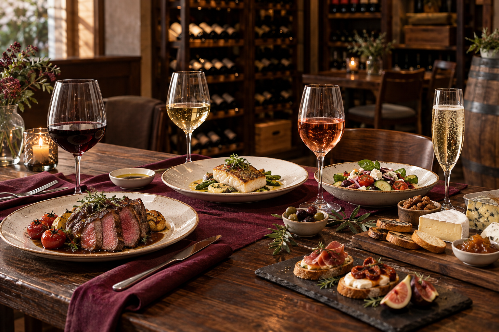

Vinhos tintos
Geralmente acompanham pratos de sabores mais intensos.
- Carnes vermelhas;
- Massas com molhos encorpados;
- Risotos de cogumelos;
- Queijos maturados.
Tradição, conhecimento e bons vinhos.
Harmonizar significa combinar as características do vinho com as características dos alimentos, procurando criar uma experiência agradável e equilibrada.
Não existem regras completamente rígidas. As preferências pessoais também devem ser consideradas na escolha.

Geralmente acompanham pratos de sabores mais intensos.
Costumam combinar com pratos leves e delicados.
São refrescantes e oferecem combinações versáteis.
Podem acompanhar desde entradas até sobremesas.
Considere o prato principal e procure um vinho versátil, que agrade diferentes paladares.
Escolha um vinho que acompanhe a intensidade do prato e contribua para tornar o momento mais marcante.
Espumantes são escolhas tradicionais para brindes e celebrações, mas também podem acompanhar refeições.
Procure conhecer as preferências de quem receberá o presente ou solicite ajuda de um especialista.
As sugestões desta página servem como um ponto de partida. O melhor vinho será aquele que combina com o seu paladar e proporciona uma experiência agradável.
Entre em contato e informe qual será a ocasião, o prato e suas preferências. Nossa equipe ajudará você a encontrar uma opção adequada.